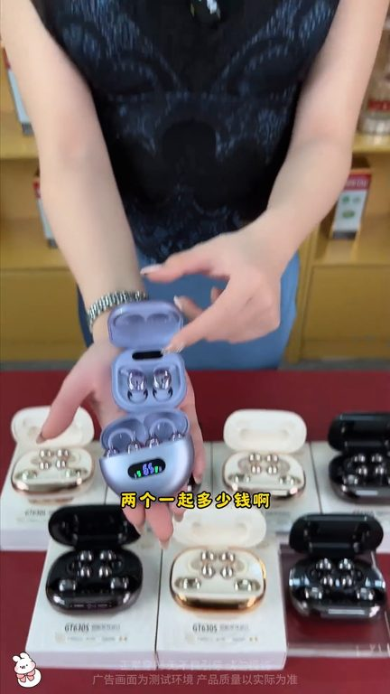
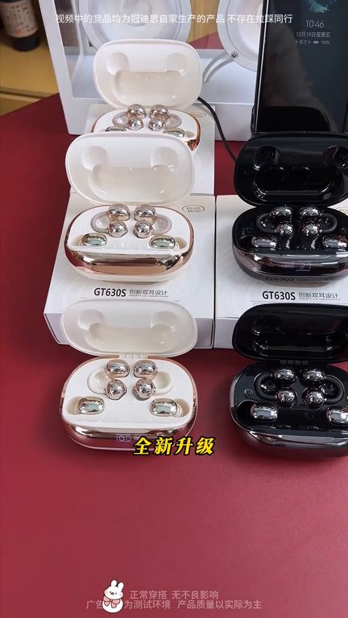
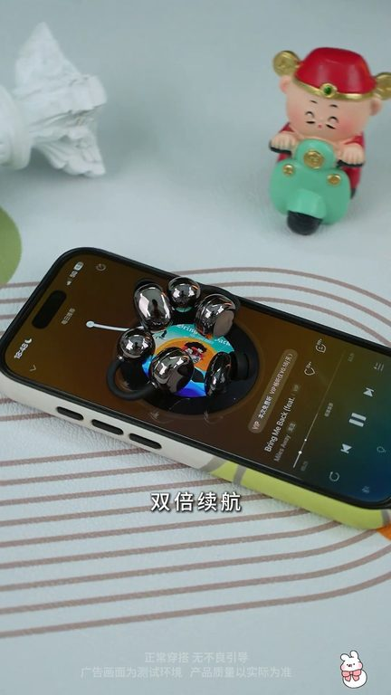

TOP 1 · 代表素材深度拆解
核心放量 点击承压
视频为原始素材 HTTPS 链接；点击后加载，建议在网络环境良好时播放。
25.8万素材消耗
1.65%CTR
21.5%类目消耗占比
-0.96pp较类目均值
表现判断
该素材是类目内第 1 名，属于“核心放量”；CTR 低于类目均值。消耗体现承接规模，CTR 体现首屏与定向效率，两项应结合判断，不能仅以单指标下结论。
表达标签
口播三段式证据
开场钩子我要一个人带着睡觉的睡眠豆再一个狂涮不掉的家两个一起多少钱啊哥,你先要买两个耳机吗?对啊那你不如来看看这个这是佩戴舒适的第五代这个是智能降噪的第六代这个是能听到巴黎之声的第七代
中段论证当然是用这个啦即所有有点语异是玄金升级多功能AI智能双栏耳机诶?多功能的?有什么功能啊?来,哥,那你可看好了打电话给姐夫你看哇,居然沾一下就能打电话的高科技啊来,感受一下戴在耳朵上的AI智能双栏耳机打开微信扫一扫诶?美女,你这是什么人家?不到一张预算,搞定你耳机所有需求GT630S,一份钱,直接给你两副耳机一副睡眠豆蜜臂降噪
结尾转化两副耳机循环使用加上大容量充电仓,走续航接近96小时正常用一周,都不用找充电线更狠的是,充电仓还支持反向充电出门手机没电,直接就级还能同时连接两部设备,和女朋友一同使用也互不打扰,不到一张预算,双倍体验,双倍续航再加上自带的AI功能这性价比,还有谁,兄弟们,充就对了
有效点
- 消耗占比 21.5% 说明具备投放承接能力，但 CTR 较类目均值低 0.96pp
- 包含使用或实测表达，能够把抽象卖点转化为可感知证据
迭代动作
- 重做前 3–5 秒：结果前置、缩短背景铺垫，并把核心人群直接写进首屏字幕
- 视频时长偏长，建议剪出 30–45 秒短版，仅保留钩子、两项证据和一次 CTA
- 促销口径与资质信息保持同屏可验证，结尾只保留一个明确行动指令
合规关注

钩子建立 · 4.4s

场景/问题展开 · 32.9s
卖点证据 · 75.8s

转化收口 · 104.4s
查看完整口播摘要
我要一个人带着睡觉的睡眠豆再一个狂涮不掉的家两个一起多少钱啊哥,你先要买两个耳机吗?对啊那你不如来看看这个这是佩戴舒适的第五代这个是智能降噪的第六代这个是能听到巴黎之声的第七代这个是有AI语音功能的第八代这个是可以听到环节音的第九代但是现在这些我统统都不孝了不是,这些都不要了,那你什么啊?当然是用这个啦即所有有点语异是玄金升级多功能AI智能双栏耳机诶?多功能的?有什么功能啊?来,哥,那你可看好了打电话给姐夫你看哇,居然沾一下就能打电话的高科技啊来,感受一下戴在耳朵上的AI智能双栏耳机打开微信扫一扫诶?美女,你这是什么人家?不到一张预算,搞定你耳机所有需求GT630S,一份钱,直接给你两副耳机一副睡眠豆蜜臂降噪图书馆学习,宿舍五修,ANC降噪让你瞬间沉浸无打扰一副耳加势,上班通勤,跑步健身,狂甩不掉还能坚固环境音,安全又舒适,担心电量两副耳机循环使用加上大容量充电仓,走续航接近96小时正常用一周,都不用找充电线更狠的是,充电仓还支持反向充电出门手机没电,直接就级还能同时连接两部设备,和女朋友一同使用也互不打扰,不到一张预算,双倍体验,双倍续航再加上自带的AI功能这性价比,还有谁,兄弟们,充就对了